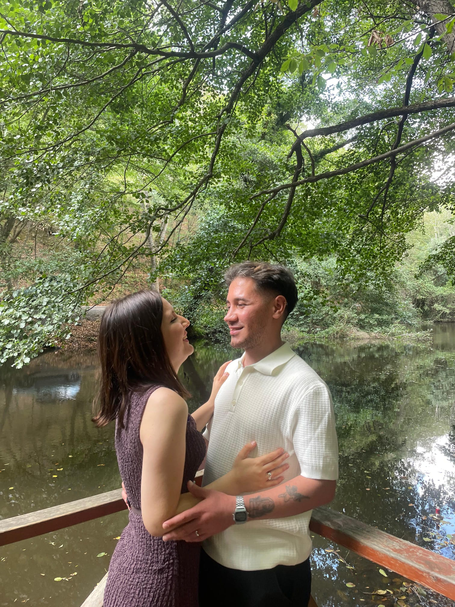

SENİ ÇOK SEVİYORUMM SEVGİLİMMM
METOŞUMM🩷🥰
Ömrümün sana ait olduğu o günden beri...
Zaman hesaplanıyor...
Bu şarkıyı bizim için seçiyorum🤍
Kabul olan tek duamsın sevgilim.
Bu zamana kadar başıma gelen en güzel hediyesin, nasibimsin.
İlk günkü kadar çok seviyorum seni…
Her geçen gün daha da aşık oluyorum.
Her şeyimsin, iyi ki varsın. 💫❤️
ANILARIMIZZ🥺🤍

❤️
Bu birlikte çekildiğimiz ilk fotoğraf ve her baktığımda o anı yeniden yaşıyorum.

Beraber geçirdiğimiz ilk doğum günün, o gün sanki ben de seninle doğmuş gibiydim sevgilimm. .

sana sarıldığım her an evrendeki tüm sesler susuyo gibi...
gülüşüne ömrümü verecek kadar çok seviyorum kurban olduğumm🤍🥰.

Kendi aramızda taktığımız söz yüzüğümüzz içimin kıpır kıpır olduğu Tarih:24.07.2025

Hayatımda geçirdiğim en güzel günlerden birisiydi .İyiki doğdum dediğim gün.Pastam hep senin ellinden olsun sevgilimm.
Sırf beni görmek için gece dışarıda sabahlayıp, sabahın dördü beşinde beni işe bıraktığın günler.Asla unutamayağım duygular yaşattın sevgilim iyikiii sen en değerlimm🥺🥺🥺🥺🤍
Tüm şımarıklarıma katlanan beni asla üzmeyen canım sevgilim.Beraber çoçuklaşıp beraber gülüyoruz.Yüzümü tek güldüren biricik sevgilimm 🥺🤍
Son olarak günlerdir bakmaya doyamadığımız fotoğrafımız🥺🤍.Gülüşüne kurban olduğum.Nefes aldığım sürece sonsuza dek seni çok seveceğimm ,hep seninim,hep benim....🤍
Gözlerimde Sen
Senden öncem mi diyeyim,
Senden öncem yok ki…
Hayatımı hayat yapan sensin,
Beni ben yapan sen.
Ölüm korkuturdu ya beni,
Sensizliğin yanında ne ki?
Hayat verdin bana,
Gecemi gündüze çevirdin,
Hüznümü neşeye…
Sevmek varmış yüreğimde,
Aşk varmış kalbimde.
Seni görünce anladım ki,
Senmişsin hepsiyle.
Senden öncem yokmuş gibi,
Sen varken nefes almak gibi…
Ömrüme ömür kattın,
Bir gülüşüne yenilmek gibi.
Ve bil ki,
Ömrümün en güzel yeri sensin.
Gözlerim, sadece seni gördüğünde tamam,
Kalbim, sadece seninle atınca huzurda…
Sevgilime ilk şiirim
Beren Altun